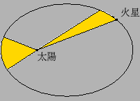
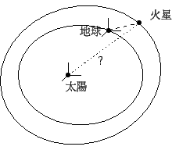
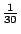

八、圓錐截線的故事
（第 7 頁）
項武義
．作者任教於香港科技大學數學系
•註釋
•對外搜尋關鍵字
|
八、圓錐截線的故事
（第 7 頁）
項武義
|
．作者任教於香港科技大學數學系 •註釋 •對外搜尋關鍵字 |
日月和四季的變化，具有明確的週期性和規律性；而且它們都全面地影響著大地上的一切現象和活動。所以自古以來各古文明都十分重視天象的觀察也都認識到各種各樣的天文知識。例如中國、埃及、巴比倫、希臘等古文明都發現漫天斗星之中，幾乎所有的星象之間的相對位置都是固定不動，可以把它們想象成固定在一個旋轉不休的「天球」上的「恆星」(fixed stars) 。唯獨有很少幾顆相當明亮的星星，它們和其他星星的相對位置則是一直在變動，乃是在天球上不停遊走的「行星」(planets：其意義是漫遊者) 。這幾顆特出的行星，自古以來就吸引著世世代代的星象觀察者。在古代的天文學中，觀察和研討日、月、行星在天空中運行的規律一直是最主要的中心課題。此事一直到十六、十七世紀之交，Kepler 行星三定律的發現才克竟其功，這也就是開創近代天文學的重大突破和奠基者。長話短說，Kepler 三定律乃是以 Tyco de Brahe 數十年對于行星運行夜以繼夜，從不間斷的詳盡、緻細的觀察數據為基礎。Kepler 再花了十多年功夫，用各種各樣幾何模型的數理分析去探索那個能夠和 Tyco de Brahe 的觀察數據充分吻合的行星運行模式。其間歷盡艱辛，屢敗不餒才在 1609 年終于完成了火星 (Mars) 的運行模式，這也就是他在《新天文學》(Astronomia Nova, 1609) 中所發表的第一與第二定律，即： 【第一定律】: 火星繞太陽以一個以太陽位于其焦點之一的橢圓運行。 【第二定律】: 在單位時間內，火星和太陽連線所掃過的面積恆相等，如 [圖 8-19] 所示。

[ 圖 8-19 ]
他接著又花了十年苦功去研究其他各行星的運行規律，它們不但也滿足同樣的第一、第二定律，而且在當年所知的六個行星（包括地球）的橢圓軌道的長徑和其週期之間還滿足下述美妙的第三定律，發表在《宇宙的和諧》(Harmonices Mundi, 1619)： 【第三定律】: 各個行星不但也滿足同樣的第一、第二定律，而且其軌道長徑的立方和週期的平方之間的比值皆相等。 首先，讓我們以後見之明，再來回顧、分析一下當年 Kepler 在發現行星三定律所經歷的艱難苦功究竟是那一種數理分析？此事的細節說來話長，而 Kepler 所發表的《新天文學》其實乃是一本把他當年所經歷的困難、失敗與成功的實況實錄，在此只簡要地概述其中主要的困難所在。以後見之明來看，地球和火星都繞著太陽作橢圓的非等速運動，大約如 [圖 8-20] 所示。

[ 圖 8-20 ]
要注意，當年 Tyco de Brahe 以及自古以來所有的觀察數據都是由地球向火星夜以繼夜的觀察，而 Kepler 所要探索的運行規律則是火星和地球究竟是如何繞太陽作相對運動。因此他先得要作出一種猜想 (conjecture) 然後根據它來計算在各個時刻地球和火星之間的方向，並且把計算所得和 Tyco de Brahe 的實測方向逐一比較，看看是否逐一吻合？（亦即偏差在觀察誤差之內。）由此可見，其所涉及的計算在本質上乃是個不斷在作相對運動的坐標系之間的坐標變換。在此得提醒一個現代讀者的，Kepler 在作這種計算的年代比笛卡兒的坐標幾何的誕生 (1637) 還要早四十年！總之，這是一種十分艱巨的「科學猜謎」。因為我們所能實測者乃是由地球到火星的觀測數據，而 Kepler 所要探索者則是地球和火星對于太陽的相對運動的規律！他在這個無比艱巨的科學猜謎的征程上屢猜屢敗，但他堅毅不屈，奮鬥了十多年才成功地發現了第一、第二定律。然後，又繼續努力了整整十年，才發現了第三定律。這種艱苦奮鬥，屢敗不餒的經歷，在 Kepler 的名著 Astronomia Nova 中都有詳細的紀錄。他不但告訴我們後之來者那輝煌的最後成功，他也忠實地紀錄下他每次失敗的經驗。其中最令人欽佩也最值得後學後進效法的是他在第 19 章之末所寫的一段話。在那一章中他對于又一個猜想進行計算，發現它和 Tyco de Brahe 的火星實測數據都吻合到 2 分（亦即  度）而這正是上述觀測的確保準確度。但是在他正要為大功終于告成而歡心鼓舞的時刻，突然記起還有另外四個實測數據忘了驗算。一算之下發現誤差是 8 分。在這個時刻，他寫下這樣一段話 註1 ：「上帝賜與我們 Tyco de Brahe 的實測數據，是確保準到 2 分的。8 分的誤差是不能接受的，讓我們重新開始吧。」 Kepler 就是以這種高潔的科學精神，不得真相永不休的奮鬥才終于發現了 Kepler 行星運行三定律的。
|
|
|
|
|
（若有指正、疑問……，可以在此 留言 或 寫信 給我們。） |
|
|
|
EpisteMath (c) 2000 中央研究院數學所、台大數學系 各網頁文章內容之著作權為原著作人所有 |
| 最後修改日期：6/19/2004 |